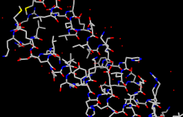

Many tasks in Chimera can be accomplished in multiple ways. For example, colors and display styles can be changed with the Actions menu or by entering commands. In general, commands are much more concise and powerful, but menus allow easy access to features without requiring knowledge of commands and their syntax.
In this tutorial, many of the same tasks performed with menus in the Getting Started Tutorial - Menu Version are carried out using commands instead.
To follow along, first download the PDB files included with this tutorial to a convenient location on your computer:
On Windows/Mac, click the chimera icon; on UNIX, start Chimera from the system prompt:
unix: chimeraA splash screen will appear, to be replaced in a few seconds by the main Chimera window. If you like, resize the Chimera window by dragging its lower right corner.
Show the Command Line (Tools... General Controls... Command Line). By default, the Command Line is also listed in the Favorites menu.
Now open a structure. Enter the command:
Command: openand use the resulting file browser to locate and open the previously downloaded file 1zik.pdb (the File type should be set to all (guess type) or PDB). The structure is a leucine zipper formed by two peptides.
A preset is a predefined combination of display settings. Apply interactive preset #2, which displays all atoms and colors the heteroatoms by element:
Command: preset apply int 2
|
Show the Side View:
Command: start Side ViewBy default, the Side View can also be started from the Favorites menu. Each window or tool can be moved to a convenient location by clicking its top bar and dragging.
The Side View allows interactive scaling (zooming) and clipping. It shows a tiny version of the structure. Within the Side View, try moving the eye position (the small square) and the clipping planes (vertical lines) with the left mouse button. The Side View will renormalize itself after movements, so that the eye or clipping plane positions may appear to "bounce back," but your adjustments have been applied.
Try moving the structure with the mouse in the main graphics window. By default, the left mouse button controls rotation and the middle mouse button controls XY translation. Continue moving and scaling the structure with the mouse in the graphics window and Side View as desired throughout the tutorial.
Hovering the mouse cursor over an atom or bond (without clicking any buttons) will show identifying information in a pop-up "balloon." The balloon will disappear when the cursor is moved away.
| Atom Specification Symbols | ||
|---|---|---|
| Symbol | Meaning | Usage |
| # | model | #model (model ID number) |
| : | residue | :residue (residue name or number) |
| :. | chain | :.chain (chain ID) |
| @ | atom | @atom (atom name) |
| = | partial wildcard | matches partial atom or residue name, e.g., @C= specifies all atoms with names beginning with C |
| ? | single-character wildcard |
matches single character in atom or residue name, e.g., :G?? specifies all residues with three-letter names beginning with G |
A Chimera command may include arguments and/or an atom specification. For example, in the following,
Command: color hot pink :lysthe color name hot pink is an argument of the command color, and :lys specifies all residues named LYS.
A blank specification is interpreted as all applicable items. For example,
Command: color hot pinkmakes all atoms (and their labels, surfaces, etc.) hot pink.
Many commands have "~" versions that perform the opposite function. For example, change the structure back to its default color:
Command: ~colorThe command help can be used to show the manual page for any command. For example,
Command: help colorshows the manual page for the command color. The Chimera Quick Reference Guide (PDF) lists all commands along with short descriptions and provides some examples of atom specification.
Display only the atoms named CA (α-carbons):
Command: show @caThe latter command undisplays atoms not named CA. The command display without any arguments displays all atoms.
-OR- (equivalent)
Command: ~display ~ @ca
By default, picking from the screen (a type of selection) is done by clicking on the atom or bond of interest with the left mouse button while holding down the Ctrl key. To add to an existing selection, also hold down the Shift key. Try picking two α-carbons, one from each peptide (Ctrl-click the first, Ctrl-Shift-click the second). The selection is highlighted in green, and its contents are reported on the button near the lower right corner of the main window.
The word selected, sel, or picked can be used in commands to specify the current selection. Label the atoms you have selected:
Command: label selThe label command shows atom information (atom name, by default). Undisplay the atom labels, then show labels for the residues containing the selected atoms:
| residue labels |
|---|
 |
Command: ~labelEach residue label is of the form:
Command: rlabel sel
res_name res_number.chainOne peptide is chain A and the other is chain B. Clear the selection and undisplay the residue labels:
Command: ~select(Another way to clear a selection is to Ctrl-click in empty space.) Color the two chains different colors; note that commands can be truncated to unique strings:
Command: ~rlabel
Command: color cyan :.aResidues and atoms can also be specified, along with or independent of chain:
Command: col yellow :.b
Command: col orange :5-9.a,12.a,8.bThe structure also includes water, which can be shown with:
Command: col magenta :14-18
Command: disp :leu.b
Command: col green :leu.b@cb
Command: disp solventDisplay the full backbone of chain A:
-OR- (equivalent)
Command: disp :hoh
Command: disp :.a@n,ca,c,oDisplay all atoms in chain A only:
Command: show :.a
| coloring by element |
|---|
|  |
Display all atoms and color them by element:
Command: dispThe byelement coloring applies to all elements including carbon (gray), whereas byhet coloring (as in the preset used near the beginning of the tutorial) leaves carbons unchanged. Heteroatom-only coloring is especially useful for keeping multiple structures with different default colors distinguishable.
Command: color byelement
Generally, each file of coordinates opened in Chimera becomes a model with an associated model ID number. Models are assigned successive numbers starting with 0. The Active models line right under the Command Line shows which models are activated for motion. The checkbox for 0 is activated. Unchecking the box makes it impossible to move model 0. Checking the box again restores the movable state.
Command: close 0closes the model. Go on to Part 2 below, OR exit from Chimera with the following command:
Command: stop
With Chimera started and the Command Line and Side View opened as described at the beginning of Part 1, choose the menu item File... Open. Use the resulting file browser to locate and open the previously downloaded file 1d86.pdb (the File type should be set to all (guess type) or PDB). It contains the molecule netropsin bound to double-helical DNA.
Use the "all atoms" preset, which will show the DNA as wire and netropsin as spheres:
Command: preset apply int 2Undisplay the water:
Command: ~disp solvent
 |
Command: color blue :daRotate, translate, and scale the structure as needed to get a better look (see mouse manipulation to review how this is done). Continue moving and scaling the structure as desired throughout the tutorial.
Command: color magenta :dt
Command: color yellow :dg
Command: color cyan :dc
Next, try some different display styles, or representations. Multiple styles can be combined with each other and with surfaces (more on surfaces below).
 |
Command: ribbonCommands (but not necessarily their keyword arguments) can be truncated to unique strings. For example, the command represent can be shortened to repr or rep but not re (because other commands also start with re), whereas its keywords stick, sphere, etc. cannot be truncated. If the truncation is not unique, one of the corresponding commands will be executed, but it may not be the one intended.
Command: ribrep edged
Command: ribrep rounded
Command: ~ribbon
Command: represent stick
Command: repr sphere
Command: rep stick :.a
Next, change everything to a ball-and-stick representation:
Command: rep bsCtrl-click to pick one of the atoms in netropsin. Label the residue,
Command: rlabel pickedshowing that it is named NT. The residue label might not be near the selected atom.
Clear the selection (for example, with Ctrl-click in empty space) and undisplay the residue label:
Command: ~rl
 |
Finally, have some fun with the surface command. There are built-in categories within structures such as main and ligand; when nothing is specified, surface shows the surface of main.
Command: surfaceSurface color can be specified separately from the colors of the underlying atoms:
Command: ~surf
Command: surf ligand
-OR- (equivalent)
Command: surf :nt
Command: surfrep mesh
Command: color red,s ligand
Command: surfrep solid
 |
Command: ~surfSometimes it is helpful to make a solid surface transparent:
Command: surf :da,dt
Command: ~surf
Command: surf :da.b,dt.b
Command: surftrans 50When finished, exit from Chimera:
Command: stop now